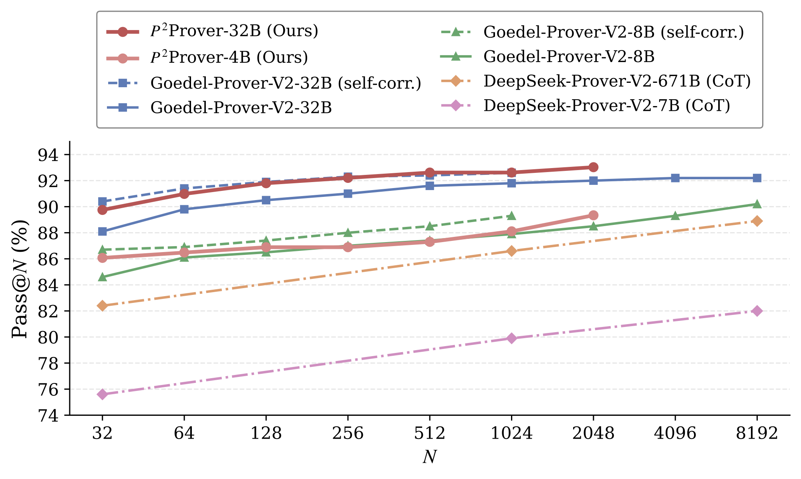

Scaling Analysis
How efficiently does Pythagoras-Prover turn inference budget into solved problems? We trace pass@N from 32 to 2048 on MiniF2F-Test against the strongest open baselines.
- Pythagoras-Prover-32B leads at every budget, reaching 93.03% at pass@2048.
- Pythagoras-Prover-4B surpasses the ~167× larger DeepSeek-Prover-V2-671B across the full range.

Consistent, not budget-specific. Pythagoras-Prover-32B leads at every budget and overtakes the self-correction-augmented Goedel-Prover-V2-32B from ~pass@256. Even ~167× smaller, Pythagoras-Prover-4B beats DeepSeek-Prover-V2-671B at every shared budget — its 89.75% at pass@2048 tops that model's pass@8192 (88.9%). Both curves start high then flatten: strong accuracy from far fewer samples.